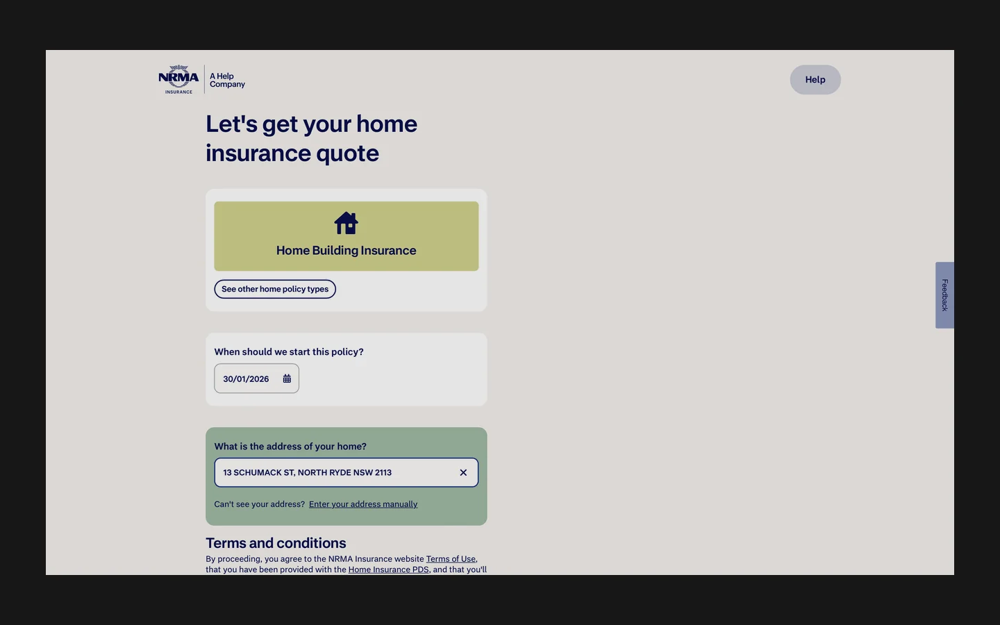
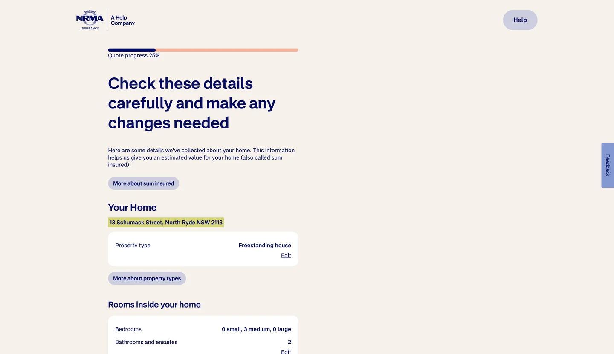

NRMA Quote & Buy Reimagine
I helped redesign NRMA’s Home Insurance Quote & Buy journey, using research and time to quote to decide what to simplify. The broader redesign cut time to quote by about half in the Building Only flow.

Use time to quote to decide what to simplify
Getting a home insurance quote means answering questions about a property and making decisions about cover. Research and behavioural analytics showed where unnecessary questions and unfamiliar insurance language slowed people down. Time to quote gave the team a way to prioritise the points in the journey where simplifying the experience could make a difference.
Combine customer evidence with what teams saw day to day
I worked with Behavioural Science, Content and customer consultants to understand where customers got stuck and what information they needed at each step. I used qualitative research and behavioural data together to connect those difficulties to specific parts of the journey.
I used AI-assisted tools in discovery and ideation to organise early research themes and explore design concepts. Customer evidence, cross-functional working sessions and usability testing informed what we took forward.
Prototype the decisions that mattered across the journey
I developed high-fidelity prototypes for Pre-Fill, Sum Insured, and Portables & Valuables. Working sessions and usability testing helped us refine language, inputs and validation across devices.
- Ask for essential information
- We reduced unnecessary inputs and simplified the order in which people encountered questions.
- Use clearer insurance language
- We refined wording so people could understand what they were being asked and why it mattered for their quote.
- Build patterns across flows
- We worked towards a repeatable structure for questions and validation so the approach could be used across more than one part of the journey.


What the wider redesign delivered
Compared with the previous experience, time to quote fell by about 50% in the Building Only flow, and selection of higher-value cover increased by about 75%. These are results from the broader redesign. The quote flow case study goes into the pricing and cover experiments within that work.
- time to quote in Building Only
- ~50% less
- higher-value cover selection
- ~75% more